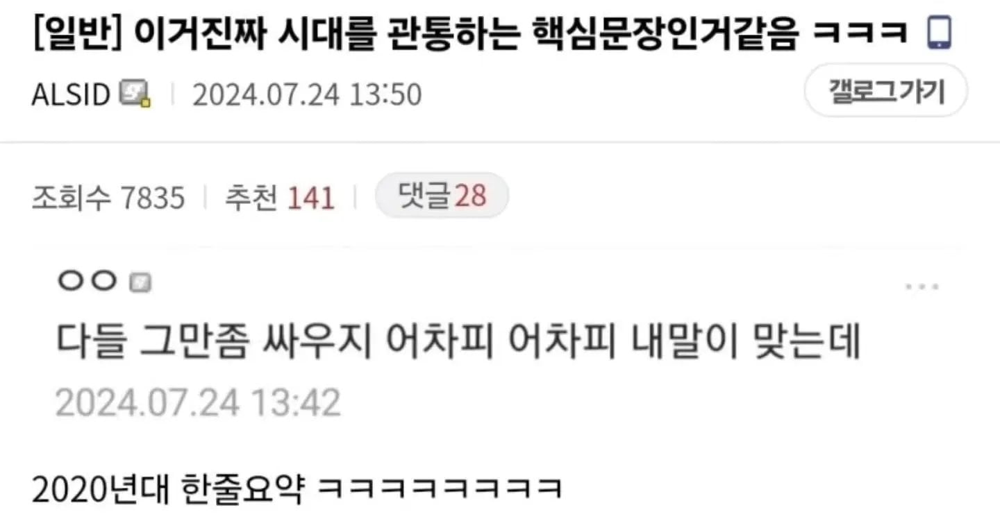
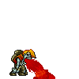
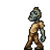

시대를 관통하는 핵심 문장 ㅋㅋ
댓글
난 아닌데 .. 난 항상 내가 틀렸을수도 있다고 생각하기 때문에 내가 맞음
그래. 아니라고 하는 니 말이 맞네
그래 고맙다
그래 고마운 게 맞네
나도 그래 난 항상 틀릴 수 있다고 생각하는 나의 방식이 정답이기 때문에 내가 맞음
ㄹㅇ 내말에 존나 토달음
태클이 많이 들어오면 뱉은 말이 븅신같다는 의미지
넵!
원래 선지자는 당대에 광인취급 받는법임
뭐래 선지국이나 드십쇼

토


우웨에에에에에에엑
우리 모두 서로의 의견을 존중해주자 물론 내가 맞고 너는 틀렸지만
난 항상 내가 틀렸을지도 모른다는 생각을 하면서 대화를 하기때문에 내말이 맞음
근데 인터넷에선 저 마인드가 무조건 정답임
그대신 욕쳐먹어도 반박하면 안됨
아닌데?
Ai에 물어봐야함
내가 맞고 니가 틀리니까 내가 가르쳐주는거야 자꾸 고집부리지마
한 2천년을 관통한거 같은데
서로 이새끼 조또 모르네 하다가 끝남
던파 대사아니가 목도하라는
ㄹㅇ 내 말에 토를 달아?
토달지말어!!
유명한 디시 명언중 하나네
"우리 서로의 의견을 존중하도록 하자. 물론 내가 맞고 니가 틀리지만."
"불의는 참아도 불이익은 못 참는다"
"이겨도 병신 져도 병신이라면 이긴 병신이 돼라"
"남들이 알아주지 않더라도 너의 일을 묵묵히 하다보면, 결국 남 좋은 일만 하게 된다."
"남들이 널 필요로한다고 해서, 그게 니가 중요한 사람이라는 뜻은 아니다."
"성공한 사람은 디시를 할 수 있어도 디시를 하는 사람은 성공할 수 없다."
"열심히 일하다보면 언젠가 보상을 받기도 한다. 하지만 게으름을 피우면 당장 확실한 보상을 받는다."

A로 시작해서 끝까지 A를 말하면 본문짤이 먹히는데
과반수이상이 말을 ㅈ대로 바꾸거나 논점 이탈함. 그러고서 지가 본문같은줄 알아
진짜 그런 저능아들 ㅈㄴ 많음
말이 많네 어차피 내 말이 맞는데
존나 당당하게 싸우다가 어느순간 지 말이 틀렸단 걸 인지한 시점에서 과거에 자기가 했던 말이 '사실 그게 아니고 이런 의미로 했던 말이었다.' 식으로 만들어보려고 온몸비틀기하는거 보면 재밌음.
계속 같은말하는데도 ㅂㅅ처럼 다른말한다는 병신도있음
존나 근본은 같은데 못알아쳐먹어서
예를 바꿔가며 쉽게말하면 왜 말바꾸냐고함
니가 개병신빡대가리라서 알기쉽게 풀어야하기 때문인데 말이지
"왜 넌 네 말만 맞다고 고집 피우냐?"
"지는..."
war, war never changes.
정답이 없는 개인의 취향, 생각에도 그건 정답이 아니라고 개지랄떰ㅋㅋㅋ
ㄹㅇ내말이 맞는데 자꾸 팩트 들이대면서 토달음
어피치로 봄
아냐 너의말이옳아
"내가 설득당해서 인정하지 않는 이상은 내말이 맞다는 결론“
ㄹㅇ 가끔병신들이 내 맞는말에 발작하면서 반박하더라 ㅋㅋㅋ
수틀리면, 일베충몰이하면 완벽
하 이새끼는 왜 사과를 안하지 씹새끼가...
말대꾸..?
하긴 세상에 정답이 어딨어... 그러니 모두 오답이야 맞지?
반박시 내말이 맞음